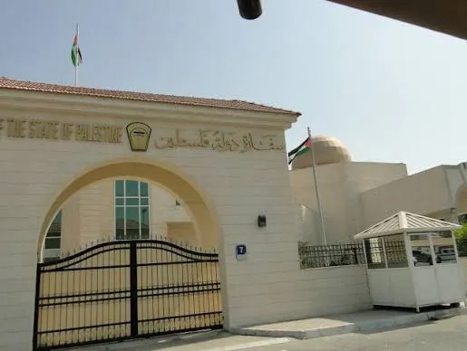
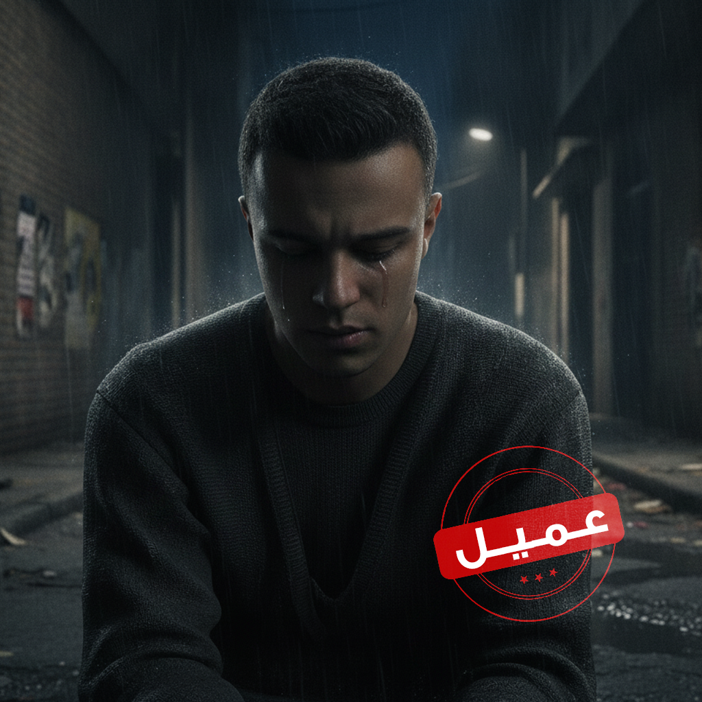
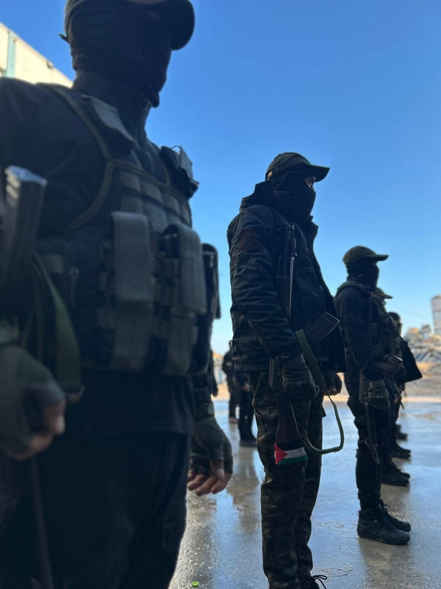
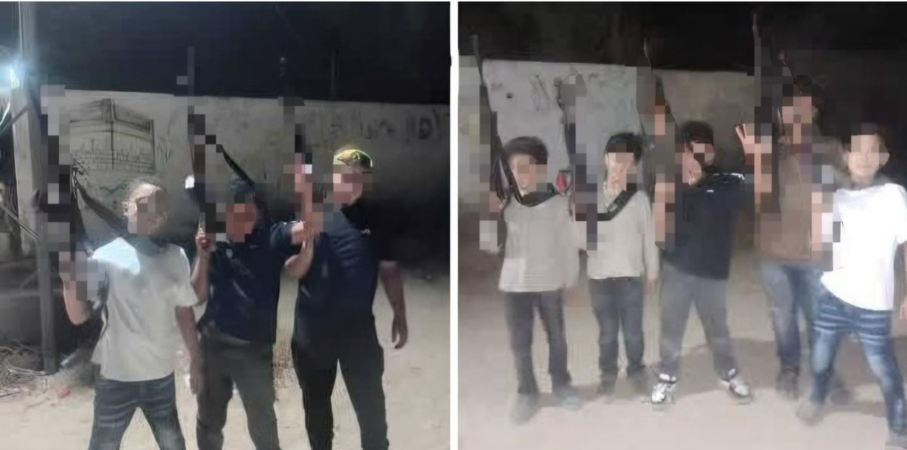

معالجات اخبارية
السلطة توقف قنصلها في دبي 15 يومًا على ذمة التحقيق بشبهات فساد
تتواصل التحقيقات مع قنصل السلطة في دبي، الذي أشير إلى اسمه بالأحرف الأولى (م.أ)، بعد أن قررت النيابة العامة الفلسطينية توقيفه لمدة 15 يومًا..

تتواصل التحقيقات مع قنصل السلطة في دبي، الذي أشير إلى اسمه بالأحرف الأولى (م.أ)، بعد أن قررت النيابة العامة الفلسطينية توقيفه لمدة 15 يومًا..








 01
01 02
02 03
03 04
04 05
05 06
06